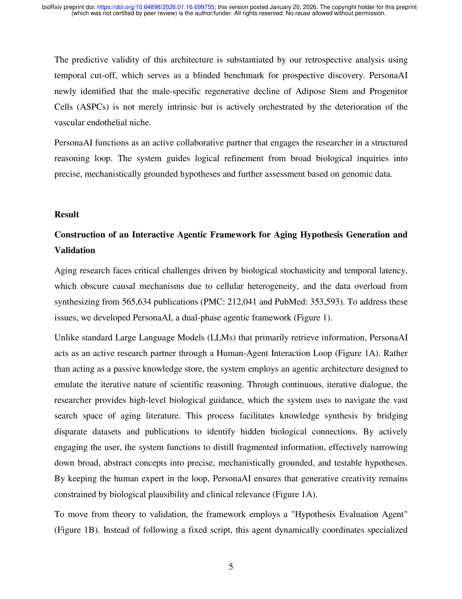
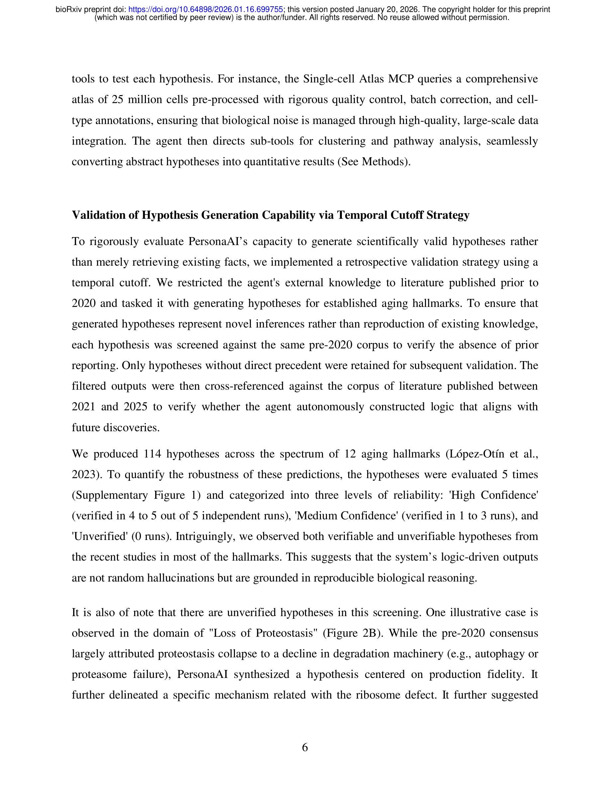
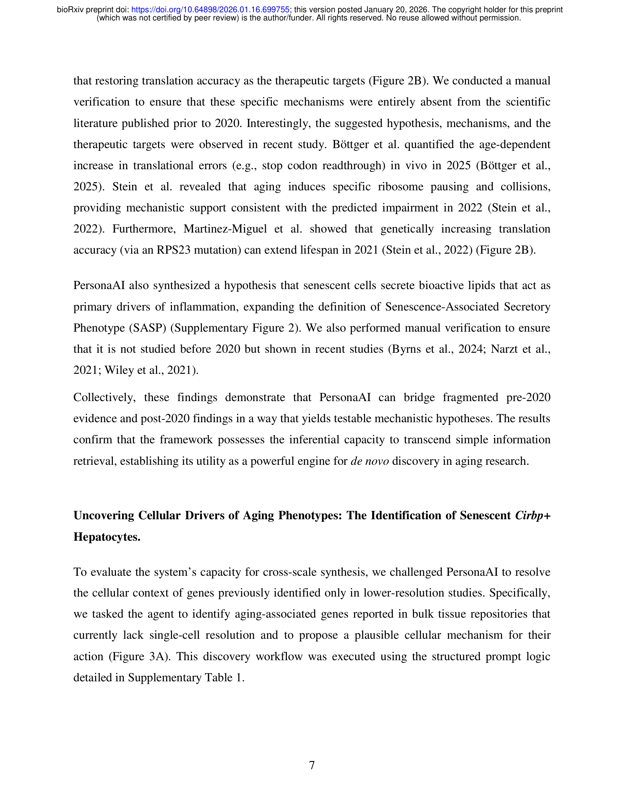
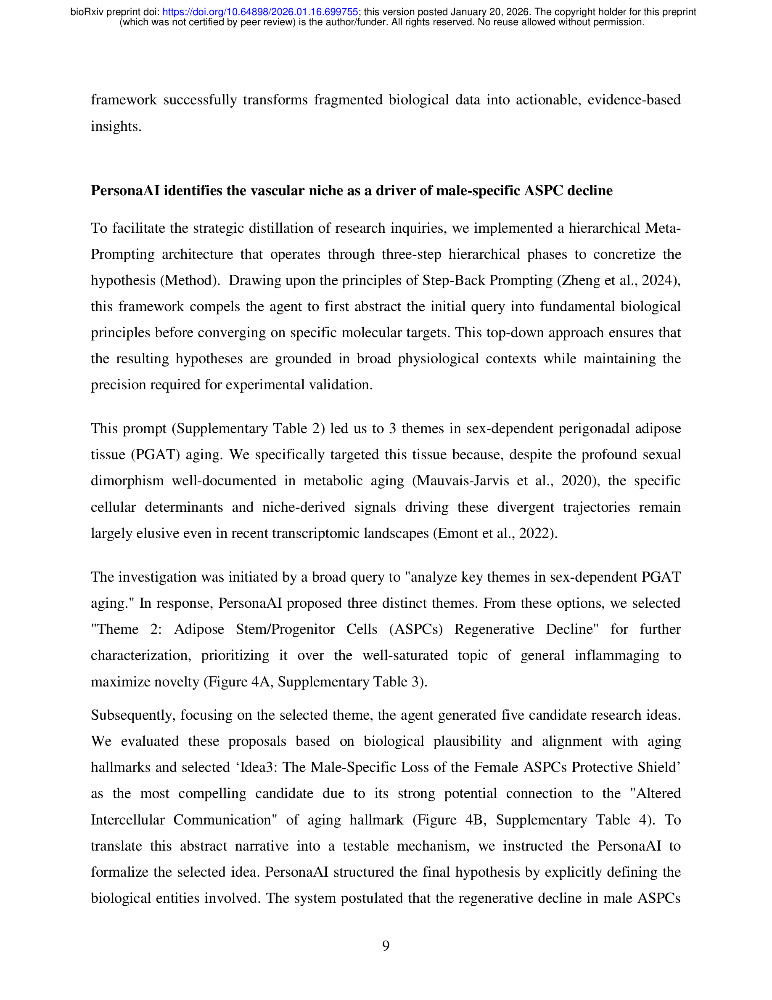

Figure 1

Figure 2
노화(aging) 연구를 위한 인터랙티브 에이전틱 AI 프레임워크 PersonaAI를 제안한다. 56만 편 이상의 노화 관련 문헌을 RAG(Retrieval-Augmented Generation) 기반으로 합성하여 메커니즘적 가설을 생성하고, 이를 single-cell RNA-seq 데이터로 자율적으로 in silico 검증하는 이중 구조(dual-phase) 시스템이다. 핵심은 완전 자율이 아닌 human-in-the-loop 방식으로, 연구자의 생물학적 직관을 AI의 대규모 문헌 합성 능력과 결합하여 가설 탐색 공간을 효율적으로 제한한다.

Figure 3
노화는 확률적(stochastic)이고 다중 스케일(multi-scale)적 특성을 가지며, 세포 이질성(cellular heterogeneity)으로 인해 인과 메커니즘 규명이 매우 어렵다. PubMed에 56만 편 이상의 노화 관련 논문이 색인되어 있어 개별 연구자가 이를 모두 소화하기 불가능하며, 고차원 single-cell 데이터의 해석에는 다학제적 전문성이 요구된다. 기존의 완전 자율 AI 시스템(AI Co-scientist, Virtual Lab 등)은 무제약적 확률 탐색에 의존해 계산 비용이 높고, 경험적 검증 메커니즘이 부재하다.

Figure 4
노화 연구라는 복잡한 도메인에서 AI를 "자율 과학자"가 아닌 "전략적 공동 연구자"로 포지셔닝한 실용적 접근이 돋보인다. Temporal cutoff 검증은 AI의 추론 능력을 평가하는 설득력 있는 방법론이며, CIRBP+ hepatocyte와 남성 특이적 ASPC 감소 사례는 프레임워크의 발견 잠재력을 구체적으로 보여준다. 다만, 실험적 검증 부재와 마우스 모델 한정은 발견의 생물학적 임팩트를 제한하며, 다른 AI 시스템과의 정량 비교가 없어 상대적 우위를 판단하기 어렵다. Meta-prompting과 MCP 기반 아키텍처의 기술적 설계는 정교하나, 프롬프트 엔지니어링 의존도가 높아 범용성에 대한 추가 검증이 필요하다.